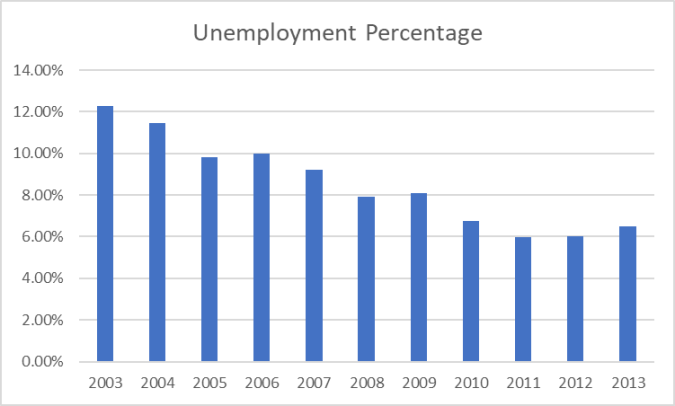

Brazil has often failed at sustaining long-term economic growth for their own country. There is very high unemployment, low investment growth, and very high public debt. Brazil has been very consistent in having high growth that then drops to high recessions, over the years that have been recorded. This video shows the truth about Brazil's economy and goes in-depth with problems that Brazil is facing economically.
This video presents how a native Brazilian wants to work to change and help the income inequality in Brazil. It also shows how bad the economy has been and how it is currently. The video shows how the social classes have differed and changed over the years.
Because of the levels of poverty, there is more violence than other countries that seem high in violence of any form. The population is differentiated between those who are vastly rich and those who are exceedingly poor. This video talks about the economic inequality in Brazil and about a man who uses technology to minimize inequality.
The unemployment rate in Brazil from 2003 to 2013 was in a steady decline, which was very beneficial and positive. After this chart's reference, the unemployment rate rose drastically, reaching almost 15% in 2021. The unemployment rate then dropped to what it is now, about 7.6%. This is very advantageous for the economy, and proving that there have been more efforts to decrease unemployment and inequality.

Economic Inequality
Brazil's citizens also face a multitude of economic divides. According to a Harvard study, the top one percent of the country holds roughly thirty percent of its wealth. This puts Brazil at the second highest income concentration in the world- a statistic many of the citizens can feel in their daily life. About 29 percent of Brazilian citizens live in poverty (I.e., living on less than $6.85 per day.), with slightly more experiencing food insecurities.

Causes
Economic inequality is a complex blend of issues that stretch across the country, though a few key factors can be considered major contributors to this issue. Primarily, the country's education system can be heavily linked to the divide. A 2019 study by the Brazilian Geography and Statistic Institute found that roughly forty percent of Brazilians of 25 years or older did not have a primary education. A closer look revealed further inequality within the education system- double the rate of white youths are enrolled in college against their colored counterparts.
The labor system itself has many flaws that contribute to the inequality; before COVID-19 hitting in 2020, the unemployment rate within Brazil had been on a steady rise since early 2012. This resulted in roughly 15% of the adult population, about 15 million, not having a job. Those who are employed still face an uncertain future- forty percent of the labor force work without the security of a contract. Additionally, much like the education system, racial inequality can be found within the job market. White workers enjoy a higher income than other ethnic groups, with the most startling difference found with black women. These women only receive roughly 45 percent of the average income that white men receive.

United Nation's Results
The tenth goal, target 10.1, of the UN Sustainability Goals states that a country must “progressively achieve and sustain income growth of the bottom 40 per cent of the population at a rate higher than the national average.” Additionally, target 10.2 states “empower and promote the social, economic and political inclusion of all, irrespective of age, sex, disability, race, ethnicity, origin, religion or economic or other status”. Currently, Brazil’s economic problems stem from most, if not all of these issues. Through providing quality education to all, reducing or eliminating pay gaps based on gender, and securing consistent, fair workforces, Brazil will be able to achieve this goal.